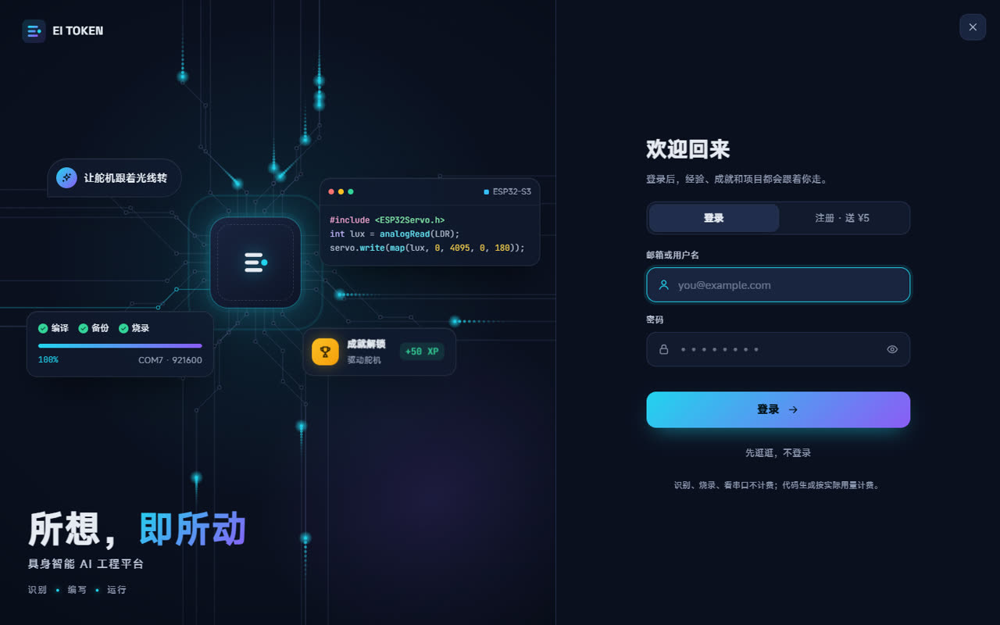
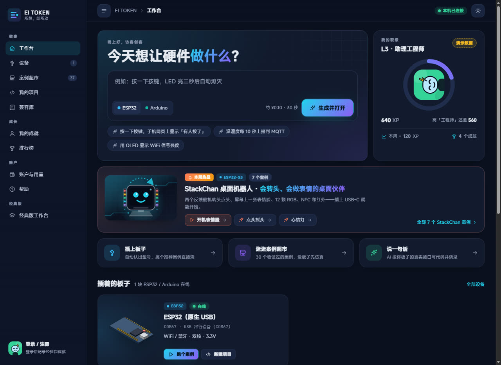
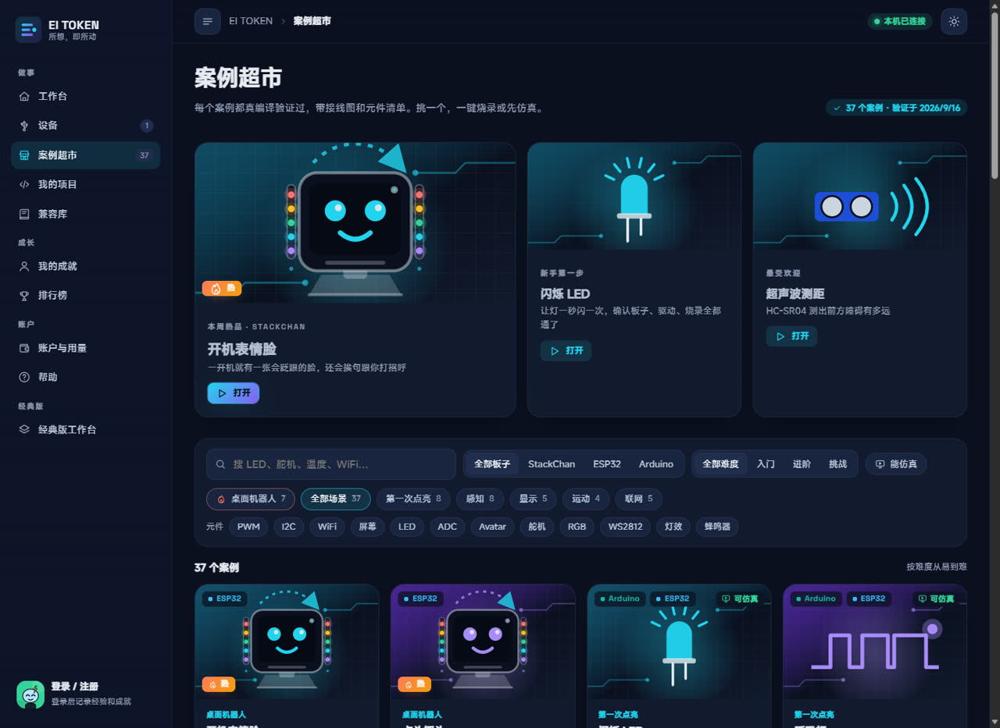
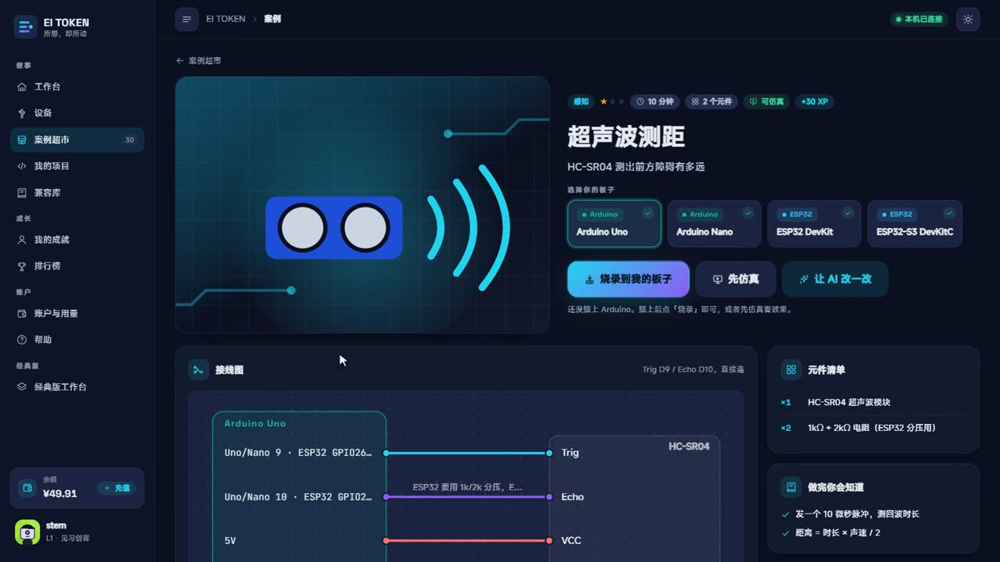
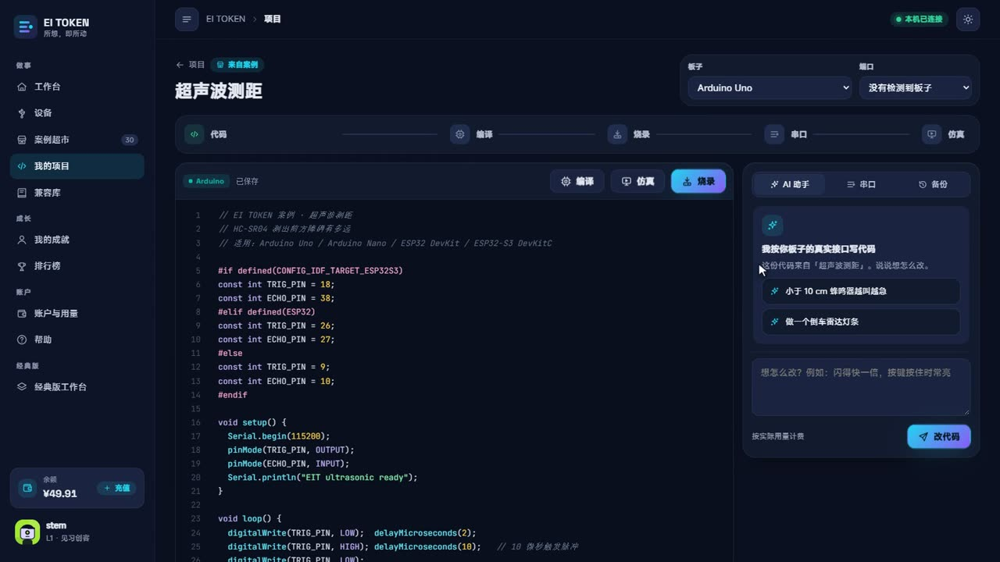
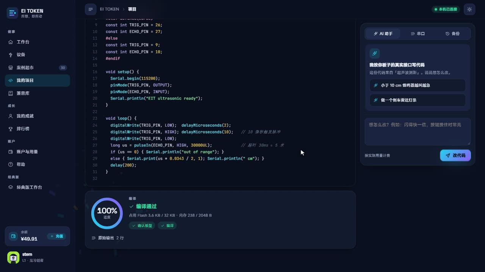
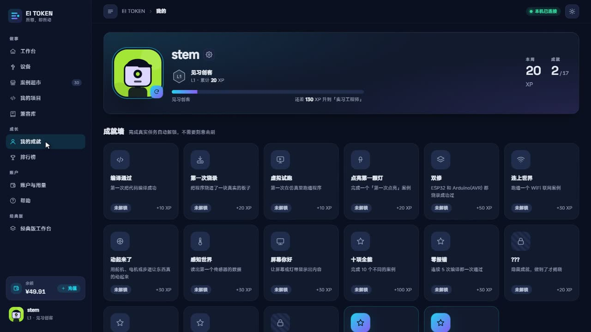
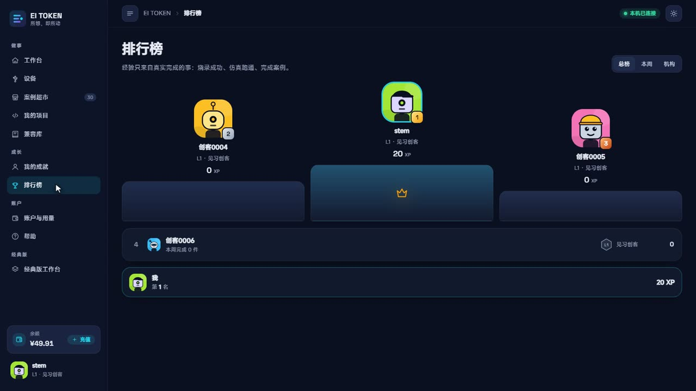

EI TOKEN 是具身智能 AI 工程平台：插上 ESP32 / Arduino，挑一个案例或说一句话，识别、编写、运行一次完成。下面每一步都是真实界面截图。
电脑、手机都行。看界面、逛 37 个案例、登录、看成就和排行榜。
自带 Arduino 工具链，Uno / Nano 插上直接编译烧录；ESP32 首次联网装一次芯片支持包。
新账号送 ¥5 额度。不登录也能看案例、看界面；只有生成代码、充值、把经验存到云端时才需要登录。

最上面一句话就是入口——"今天想让硬件做什么？"。下面三张卡是三条路：插上板子、逛案例超市、说一句话。

37 个案例，每一个都在对应板型上真实编译验证过。带接线图、元件清单、能不能仿真的标记。

先选你的板子（插着的会自动高亮），接线图和引脚会跟着板型切换。然后三选一：烧录到我的板子、先仿真、让 AI 改一改。

顶部一条步骤线：代码 → 编译 → 烧录 → 串口 → 仿真。烧录前会先把板子上原来的程序自动备份，随时能还原。


经验只认真实事件：编译通过、烧录成功、完成案例、第一次用新板型。19 个成就，L1 见习创客到 L8 首席工程师，只展示不锁功能。


能。带"能仿真"标记的案例在浏览器里跑；云端体验版全程用演示设备也能把流程走一遍。
多半是串口驱动（CH340 / CP210x）。Win11 通常自动装好，Win10 装一次驱动即可；帮助页有链接。
识别、编译、烧录、串口不计费。AI 生成代码按实际用量计费，一次大约 ¥0.10；新账号送 ¥5。
烧录前自动备份了原固件，项目页"备份"标签里一键还原。